Section 13. Building Real-time Server-Less apps with Firebase
170. What is Firebase
- A fast backend suite. Firebase is free to start and has small costs as your project grows.
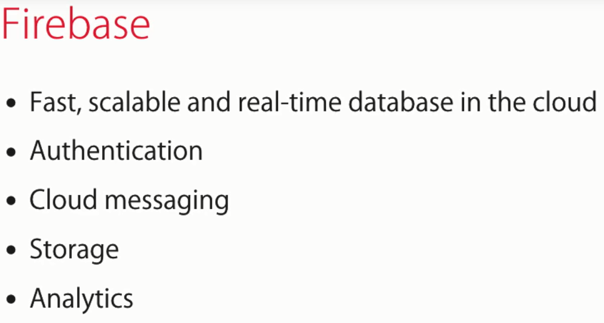
171. Your first Firebase Project
- firebase.google.com, create an account. then go to console.firebase.google.com. Create a project
172. Working with Firebase Databases
- An example of the structure of a firebase database. Note: reporting is not the best in noSql db's
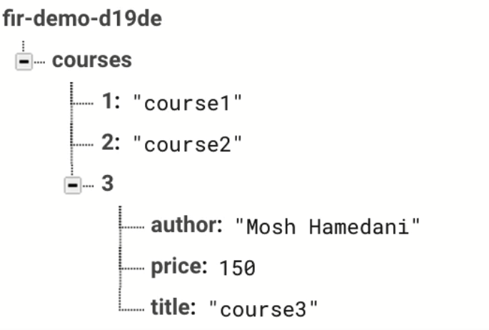
173. Installing Firebase
- Create a new project ng new firebase-demo
- Need to install npm install firebase angularfire2 --save
- Go to tne environment.ts . To find what to add go to the settings of your firebase app and copy the properties for the connection string
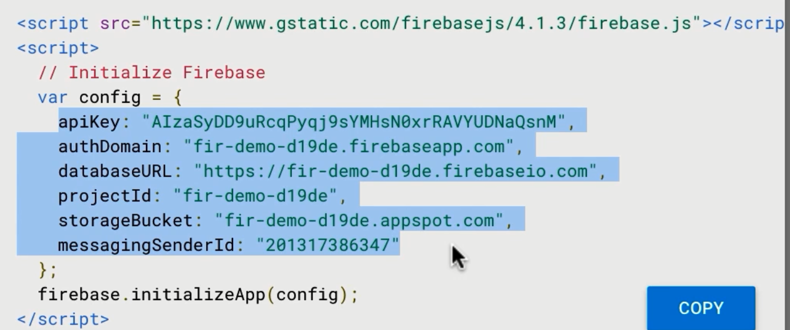
- Add this to environment.ts
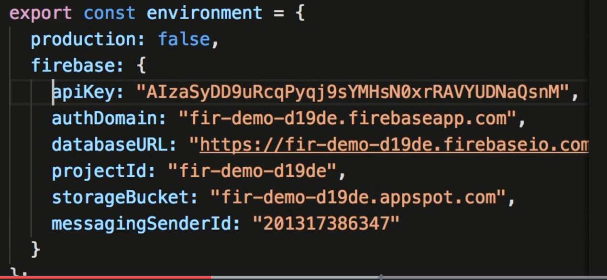
- in app.module.ts you need to import the AngularFireModule, AngularFireDatabaseModule and the environment filre add to the imports array
- Note: text missing on import AngularFireDatabaseModule from 'angular2/database
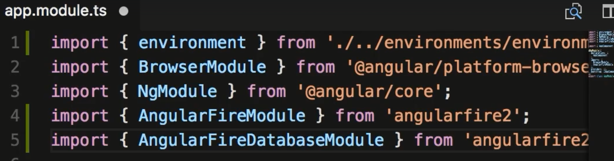
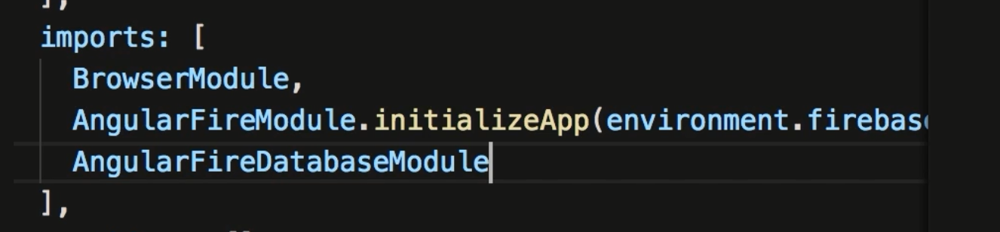
174. Reading Lists
- After import AngularFireDatabase into your component.
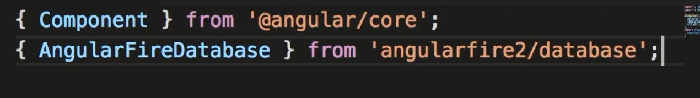
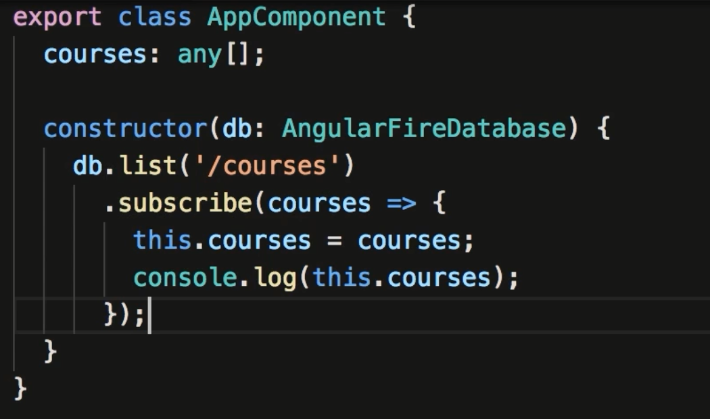
- Note: you will need to give permission to read this information. To modify, in the firebase console, look for rules,and modify ".read": true
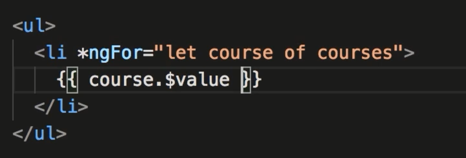
- Above is a way to display the list of courses.. (note: course 3 has been modified to match course 1 and 2)
175. A Real-time Database
- The connection is realtime, therefore if you modify the data in the console, the changes will be reflected immediately in your program.
176. Observables and Memory Leaks
- Memory leaks can occur if you have many components talking to the db
177. Unsubscribing from Subscriptions
- Need to use onInit and OnDestroy to clean up memory when a component is destroyed.
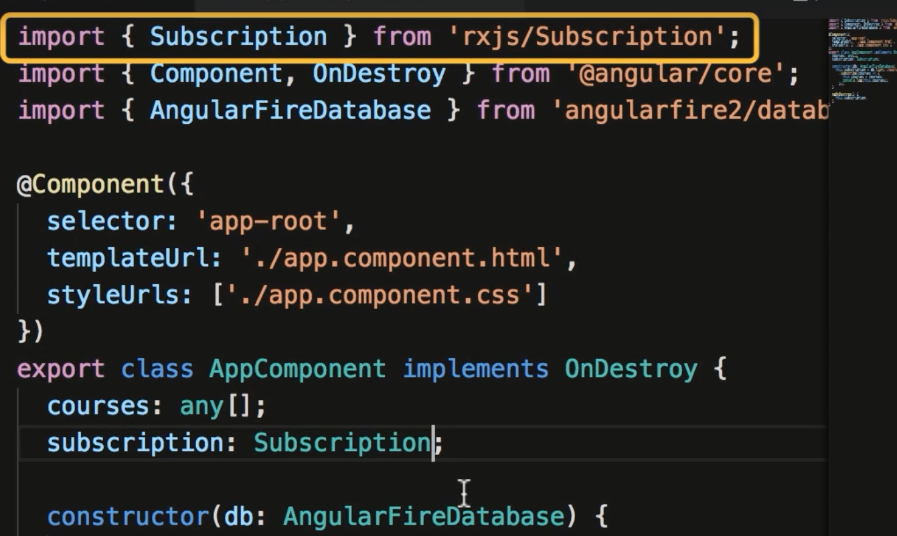
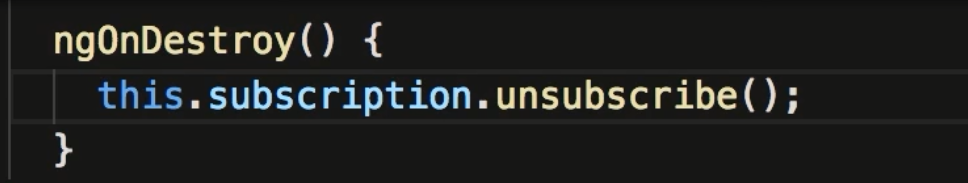
- This example creates a button to simulate the ngDestroy to the component.
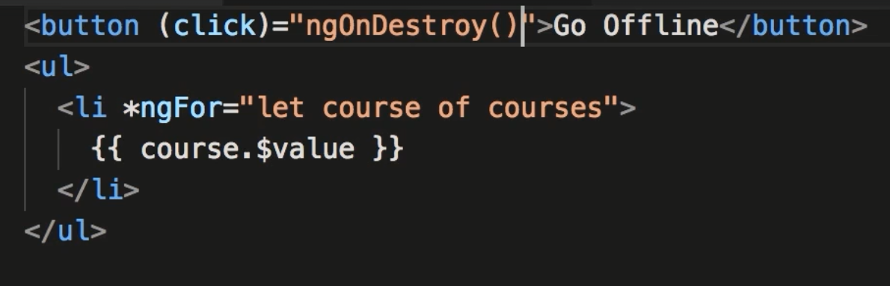
178. Async Pipe
- You can use a pipe to emulate what was done in the above example. The async Pipe handles the subscription and unsubscription, cleaning the code needed to implement
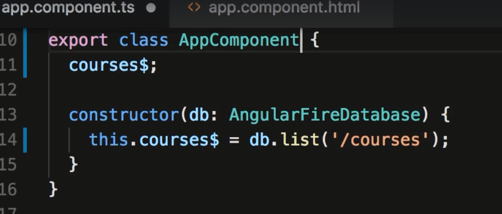
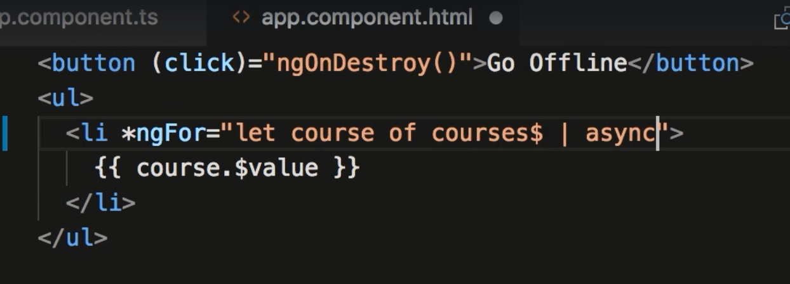
179. Reading an Object
- Below is an example of reading an object built in Firebase
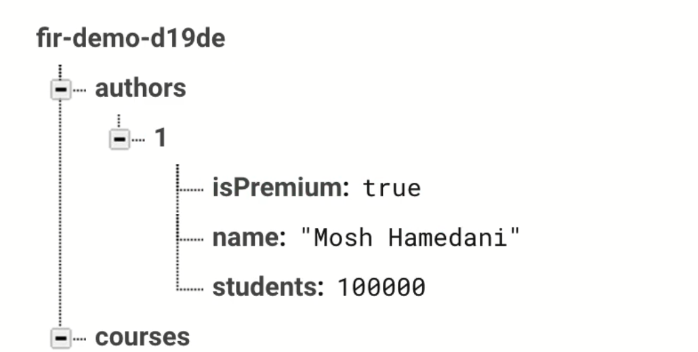
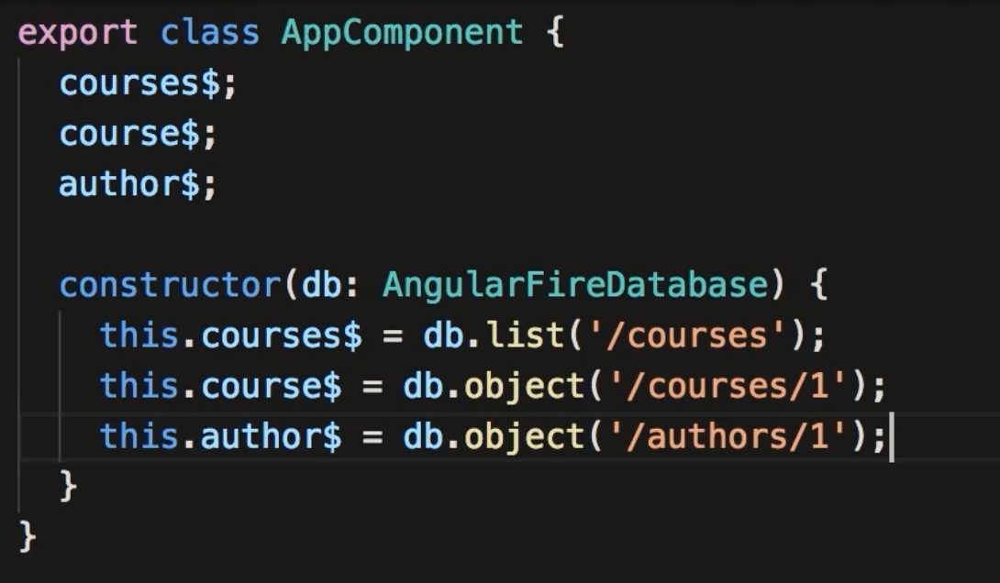
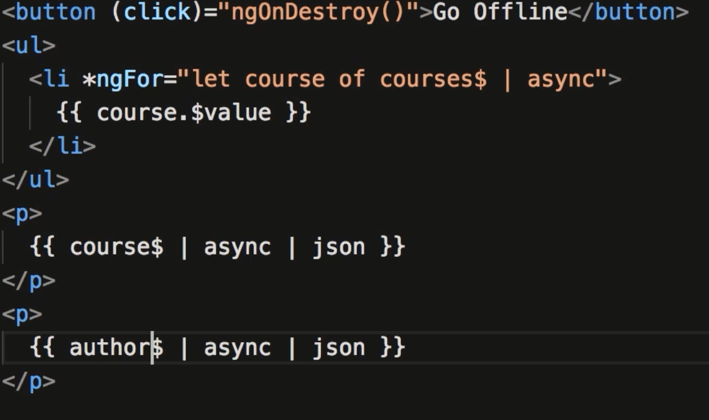
180. As Keyword
- A way of simplifying your code by substituting the author$ | async with the workd author
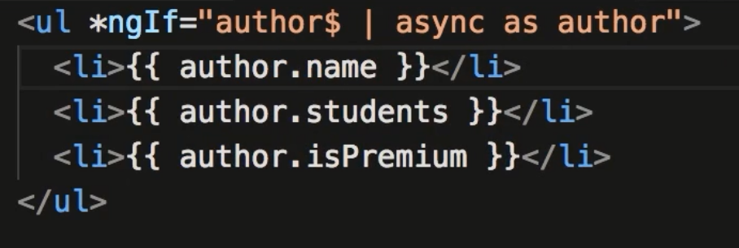
181. Adding an Object
- Use the push method to update firebase. You will need to give everyone write permission. Not looking like a way to go.
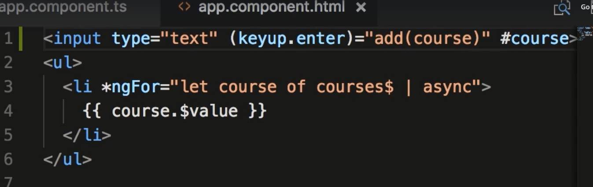
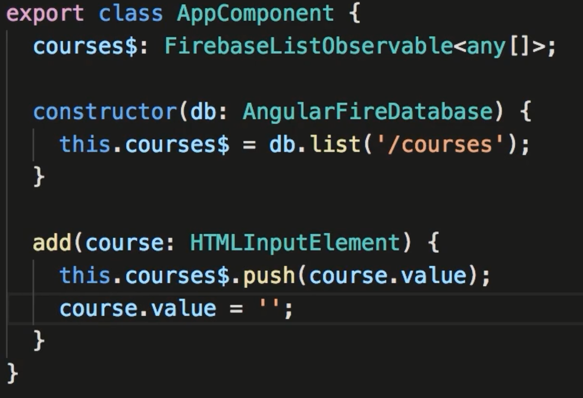
182. Updating an Object
- There are 2 methods, set and update. Set updates the whole object, while update updates only what is in the query.
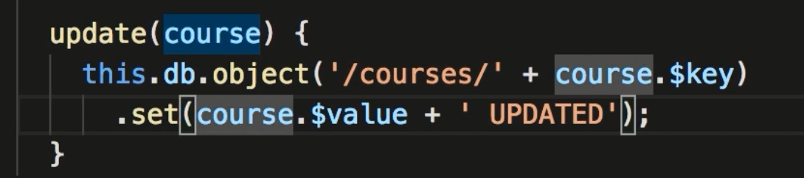
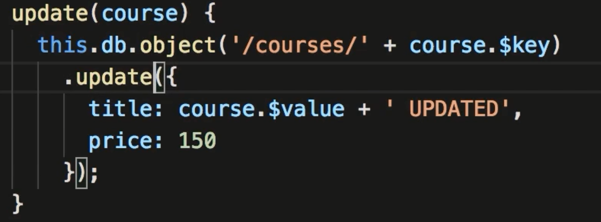
183. Removing an Object
- Similar to update except we use the remove method.
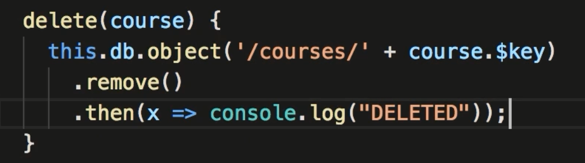
184. Additional Resources
- Mosh has another course if you want to look at further firebase tasks.
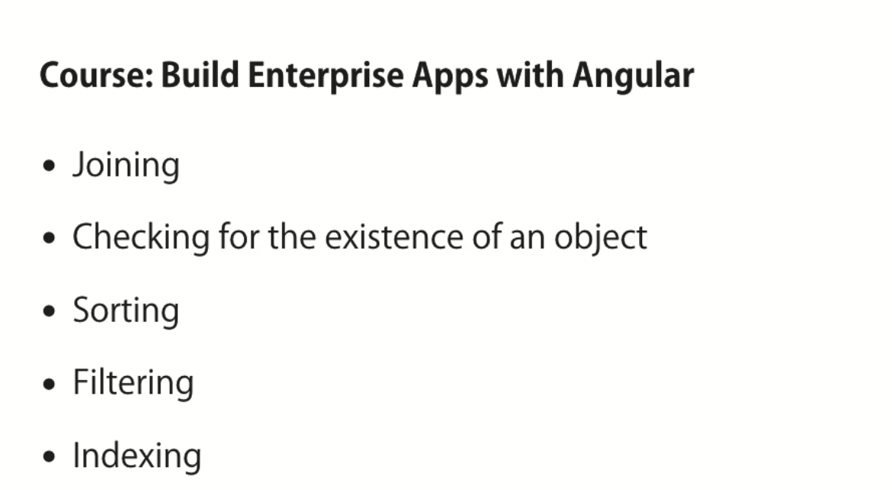